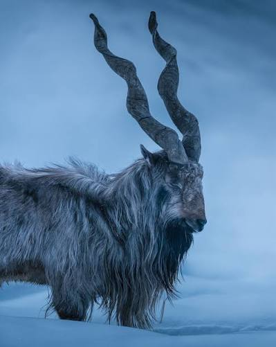

Himalayan jumping spider
The Himalayan jumping spider (Euophrys omnisuperstes) is tiny: females are about 5 mm long, and males are about 4 mm or less. It has been recorded at elevations of up to 6,700 metres in the Himalayas.
The Himalayan jumping spider (Euophrys omnisuperstes) is tiny: females are about 5 mm long, and males are about 4 mm or less. It has been recorded at elevations of up to 6,700 metres in the Himalayas.


Replace this with the frog’s name and details once you’ve identified the species.